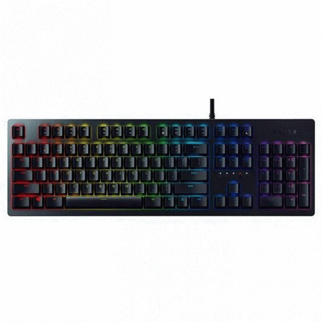
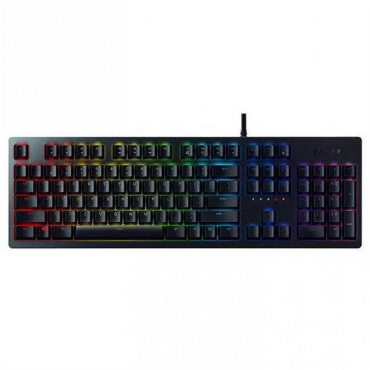
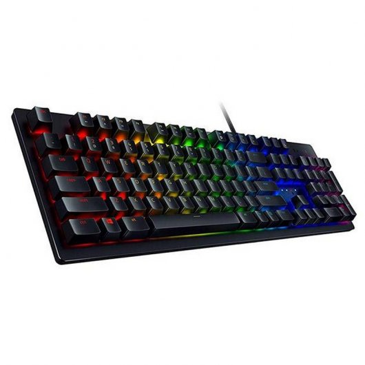
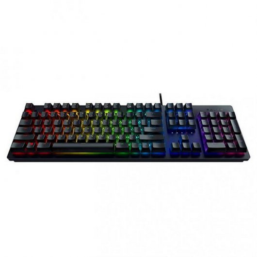
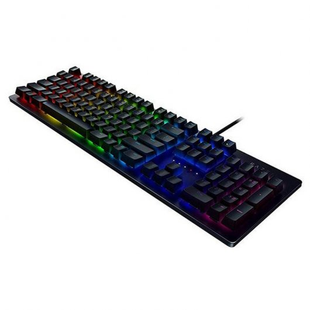

FUTURETECH STORE |
|      |
Razer Huntsman
154,86€
uando creamos la línea Razer Huntsman, no nos propusimos producir otra línea de teclados para juegos superiores. Tuvimos la visión de revolucionar una nueva frontera de rendimiento de juegos. Y con Razer Huntsman, está a punto de experimentar exactamente lo que queríamos ofrecer: un teclado que eleva al instante la forma en que juega.
Características
EL NUEVO INTERRUPTOR OPTO-MECÁNICO DE RAZER: Los interruptores Razer Opto-Mechanical ™ tienen un sensor óptico de luz dentro del interruptor. Al presionar una tecla, permite que un receptor sea activado por esta señal de luz, actuando instantáneamente el comando del interruptor. Nunca antes has experimentado una velocidad como esta.
MEMORIA HÍBRIDA A BORDO Y ALMACENAMIENTO EN LA NUBE: Vuelva a vincular botones, asigne macros y guarde automáticamente todas las configuraciones de su perfil con almacenamiento en la nube. Y si no tiene acceso a Internet, simplemente guarde hasta 5 perfiles a través de la memoria híbrida incorporada.
Especificaciones
Nuevo Razer Opto-Mechanical Switch ™ - Luz y Clicky
Barra estabilizadora clave para una actuación precisa y equilibrada
Memoria híbrida a bordo y almacenamiento en la nube
Hasta 100 millones de pulsaciones de teclas
Retroiluminación Razer Chroma ™
Especificaciones técnicas
Interruptor opto-mecánico Razer ™ con fuerza de actuación de 45 G
100 millones de vida útil del teclado
Retroiluminación cromática con 16,8 millones de opciones de color personalizables
Almacenamiento híbrido a bordo - hasta 5 perfiles
Razer Synapse 3 habilitado
Teclas totalmente programables con grabación macro sobre la marcha
Roll-over de 10 teclas con anti-efecto fantasma
Opción de modo de juego
Cable de fibra trenzada
Ultrapolling de 1000 Hz
Placa superior mate de aluminio
|


{kind=link}
{kind=link}
{kind=link}
{kind=link}